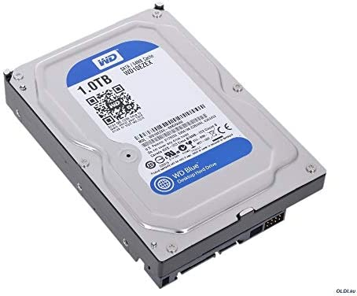

When it comes to storing data on a personal computer, there are a few different options to choose from. The two main types of storage are hard disk drives (HDD) and solid-state drives (SSD).
Hard disk drives have been around for decades and are still commonly used in many computers today. They use spinning disks and magnetic heads to read and write data. HDDs can hold a large amount of data and are relatively inexpensive, but they can be slower than SSDs.
Solid-state drives are a newer type of storage that have become increasingly popular in recent years. They use flash memory to store data, which makes them much faster than HDDs. SSDs can be more expensive than HDDs, but they are also more durable and consume less power.
When deciding which type of storage to use in a PC, it's important to consider factors such as cost, performance, and capacity. Many people opt for a combination of HDD and SSD storage, with the OS and frequently used programs installed on the SSD for faster performance, and less frequently used data stored on the larger HDD.
Overall, choosing the right storage is an important part of building or upgrading a PC. By understanding the differences between HDDs and SSDs, you can make an informed decision that meets your needs and budget.